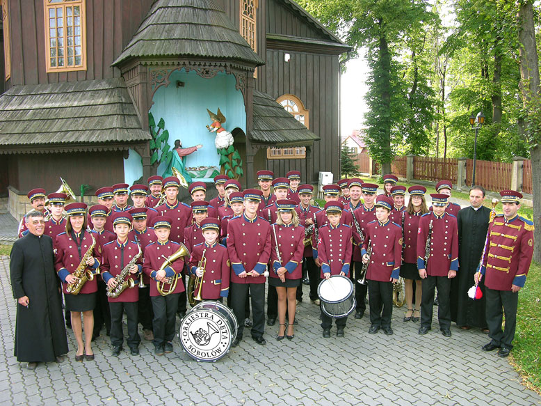
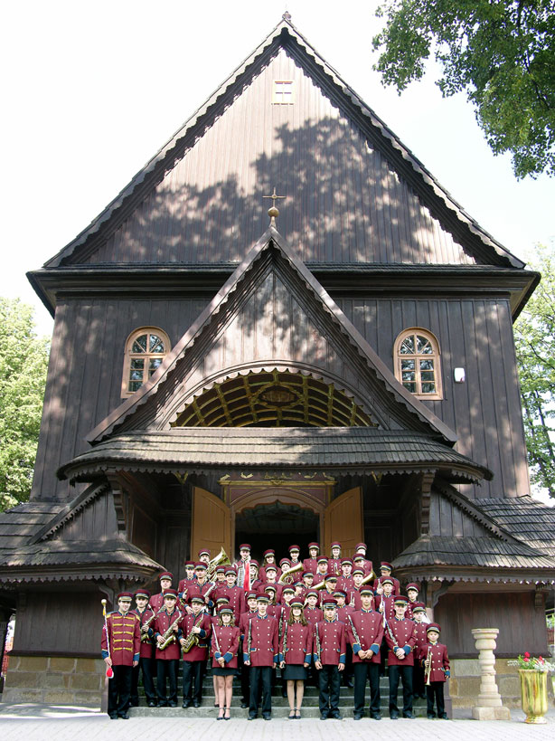
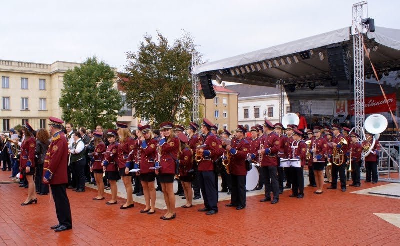

Jak to
się zaczęło
Parafialno-Gminna Orkiestra Dęta Sobolów powstała we wrześniu 2001 roku z inicjatywy proboszcza parafii pw. Wszystkich Świętych w Sobolowie, ks. Stanisława Jachyma, oraz organisty Stanisława Chmielka, który objął funkcję prezesa stowarzyszenia i kapelmistrza orkiestry. Początkowo orkiestra zaczynała od zera, nie posiadając instrumentów ani muzycznego przygotowania wśród młodzieży, ale dzięki wsparciu parafii, lokalnych władz oraz ludzi dobrej woli, orkiestra została wyposażona w instrumenty i mundury.
W maju 2004 r. Orkiestra Dęta Sobolów po raz pierwszy wzięła udział w powiatowym przeglądzie orkiestr dętych w Nowym Wiśniczu, zdobywając III miejsce w kategorii orkiestr doświadczonych, co dało jej kwalifikację do XXVII Małopolskiego Festiwalu Orkiestr Dętych „ECHO TROMBITY” w Nowym Sączu. W czerwcu 2004 r. orkiestra wystąpiła na tym festiwalu w kategorii „Orkiestry Młodzieżowe”, gdzie została wyróżniona przez Komisję Artystyczną za wysoki poziom wykonania. W maju 2005 r. orkiestra ponownie zdobyła II miejsce w przeglądzie w Nowym Wiśniczu i zakwalifikowała się do Festiwalu „ECHO TROMBITY”, gdzie zdobyła II miejsce w kategorii orkiestr parafialnych. W sierpniu 2005 r. zespół po raz pierwszy wystąpił za granicą – na Słowacji. W 2006 r. orkiestra zdobyła II miejsce na przeglądzie powiatowym, a na Festiwalu „ECHO TROMBITY” w kategorii orkiestr parafialnych – I miejsce.
W 2007, 2008, 2009 i 2010 r. orkiestra utrzymała swoje dotychczasowe sukcesy. Koncertowała także kilkakrotnie poza granicami kraju (Litwa, Słowacja, Niemcy). W 2009 i 2012 r. orkiestra koncertowała na Węgrzech, odwiedzając partnerską orkiestrę z Nagykaniza. W 2013 roku orkiestra zdobyła Grand Prix w XVI Wiśnickiej Paradzie Orkiestr Dętych oraz I miejsce w Małopolskim Przeglądzie Orkiestr Dętych „Echo Trombity”.
Rok 2014 przyniósł zmiany – orkiestrę przejęła dotychczasowa instrumentalistka (puzonistka) Justyna Chmielek. Zespół zdobył I miejsce w kategorii orkiestr parafialnych oraz Złotą Buławę za prezencję i grę w marszu w Nowym Sączu. Prezes orkiestry, Stanisław Chmielek, został odznaczony Medalem Zasłużony Kulturze – Gloria Artis, nadanym przez Ministra Kultury i Dziedzictwa Narodowego. W 2015 r. orkiestra zdobyła Grand Prix na XXXVIII Małopolskim Festiwalu Orkiestr Dętych „Echo Trombity” oraz po raz drugi Złotą Buławę za najlepszą prezencję w marszu.
W 2016 r. orkiestra zaprezentowała się na XXV Międzynarodowym Festiwalu Orkiestr Dętych „Złota Lira” w Rybniku, zdobywając Złote Pasmo oraz nagrodę dla najlepszego dyrygenta festiwalu. W tym samym roku orkiestra zdobyła Grand Prix na przeglądzie orkiestr dętych w Nowym Wiśniczu. Na przełomie maja i czerwca miała zaszczyt koncertować we Włoszech, m.in. na Audiencji Generalnej u Papieża Franciszka, oraz na XVIII Międzynarodowym Festiwalu Orkiestr w Giulianowa, gdzie zdobyła II miejsce oraz nagrodę dla najlepszego kapelmistrza festiwalu, Justynę Chmielek-Korbut. Zespół zdobył również I miejsce w kategorii orkiestr parafialnych na 40. Małopolskim Festiwalu Orkiestr Dętych w Nowym Sączu.
Orkiestra nie tylko odnosiła sukcesy na krajowych i międzynarodowych festiwalach, ale także dbała o rozwój artystyczny młodzieży, tworząc w 2010 roku Szkołę Muzyczną I stopnia w Sobolowie. W 2019 roku orkiestra zdobyła I nagrodę na festiwalu Golden Sardana w Lloret de Mar, a także wystąpiła w Hiszpanii, gdzie zdobyła nagrodę za najlepsze wykonanie hymnu FC Barcelona.
W 2020 roku, dzięki współpracy z Ministerstwem Kultury i Dziedzictwa Narodowego, orkiestra uzyskała nowoczesne studio nagraniowe. Orkiestra Dęta Sobolów, przez 20 lat swojej działalności, stworzyła wyjątkową historię, której rozwój zawdzięcza wsparciu lokalnej społeczności oraz wielu ludziom dobrej woli.